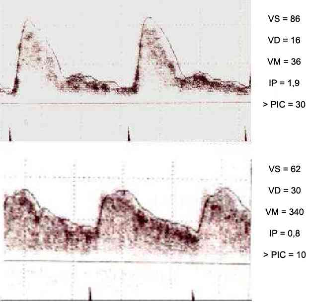
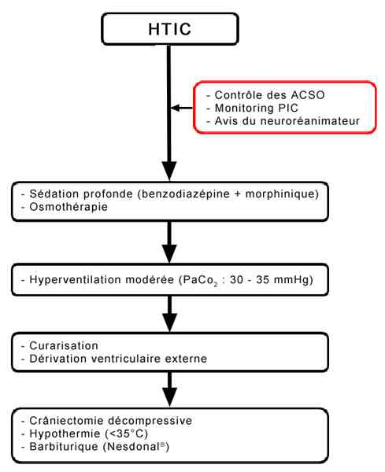
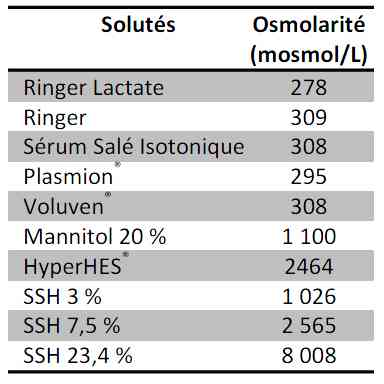
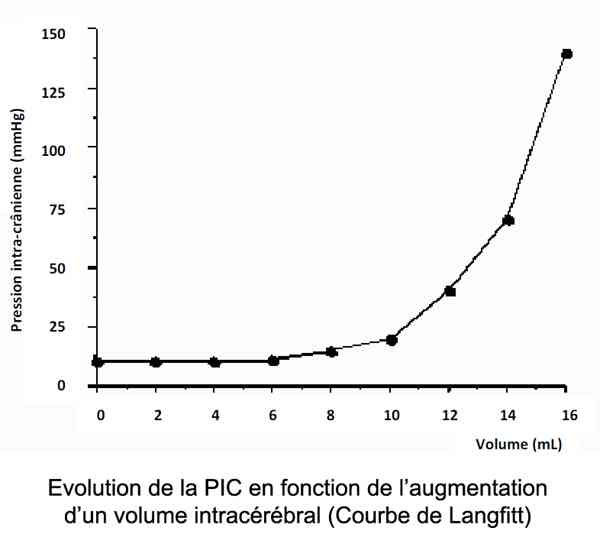
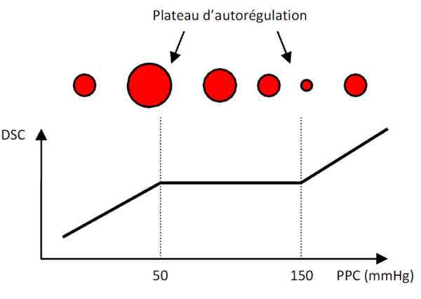
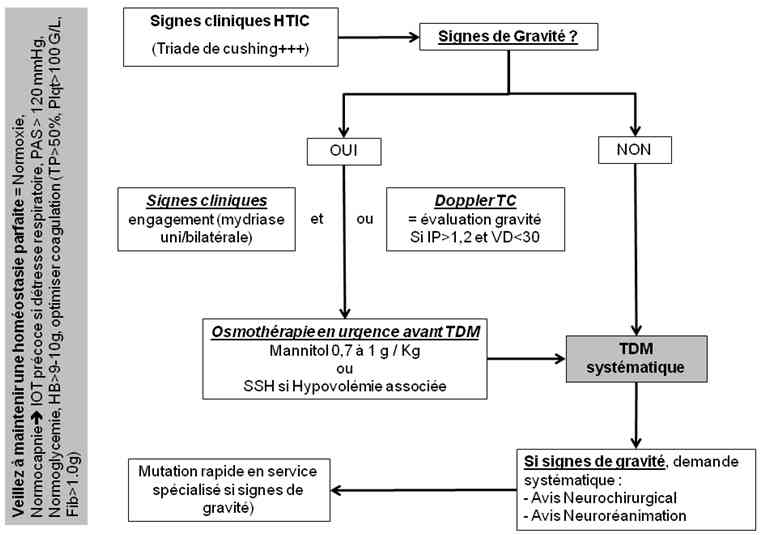

Bienvenue Sur Medical Education
Hypertension intracrânienne
Spécialité : neurologie / traumatologie /
Points importants
-
Véritable urgence médicale
-
Début le plus souvent rapide, parfois progressif (tumeur)
-
Se traduit par des céphalées associées à des vomissements, puis l'apparition d'un coma conduisant à un engagement cérébral
-
Triade de Cushing (bradycardie, HTA, mydriase) est très évocatrice
-
Diagnostic évoqué par le Doppler transcrânien, confirmé par la mesure directe des pressions (intraparenchymateuse ou intraventriculaire)
-
Les solutés hypertoniques sont potentiellement utiles
-
Les corticoïdes sont réservés aux étiologies tumorales ou infectieuses
-
Le traitement consiste le plus souvent à traiter l'étiologie (hématome extradural...)
-
En cas d'HTIC réfractaire, une craniectomie décompressive peut être proposée
-
Pas de PL en cas de suspicion d'HTIC
Présentation clinique / CIMU
Présentation clinique / CIMU
EXAMEN CLINIQUE
Très variable en fonction de la vitesse d'installation de l'HTIC. Le tableau d'HTIC aiguë est d'emblée parlant avec un risque vital au premier plan alors qu'une HTIC d'installation chronique (HTIC compensée) peut être délicate à mettre en évidence avant qu'elle ne décompense ; elle peut alors se présenter sous la forme d'un tableau aigu
HTIC aiguë
-
Signes neurologiques :
- troubles de la conscience : progressifs et secondaires à une baisse de la perfusion cérébrale et/ou un engagement cérébral
- paralysie des paires crâniennes, déficit hémicorporel...
-
atteinte du tronc cérébral :
- instabilité hémodynamique
- bradycardie
- troubles ventilatoire (apnée...)
-
Formes cliniques :
-
engagement temporal :
- déplacement de la 5e circonvolution temporale dans l'incisure tentorielle sous l'effet d'une pression asymétrique sur le diencéphale (ex. : hématome extradural) responsable d'une compression de la partie latérale du pédoncule cérébral qui induit :
- somnolence
- dilatation pupillaire homolatérale
- atténuation du réflexe photomoteur associée à une hémiparésie controlatérale
- stade ultime = coma, mydriase aréactive homolatérale, hémiplégie controlatérale
-
engagement central :
- engagement du diencéphale à travers l'incisure tentorielle sous l'effet d'une pression bilatérale (ex. : oedème cérébral diffus, « Brain Swelling » en anglais) :
- détérioration neurologique rostro-caudale avec disparition progressive des réflexes du tronc cérébral à mesure que le coma s'approfondit
- au stade bulbaire : apnées ; mydriase bilatérale aréactive avec évolution jusqu'à la mort encéphalique qui correspond à une destruction complète du diencéphale et du tronc cérébral
-
engagement des amygdales cérébelleuses : au travers le trou occipital, suite à une hypertension dans la fosse cérébrale postérieure :
- crises toniques postérieures
-
engagement temporal :
-
Signes généraux :
-
triade de Cushing :
- HTA
- bradycardie
- mydriase bilatérale
-
triade de Cushing :
-
NB : Cette réaction systémique est développée en réaction à un épisode aigu d'HTIC. Il s'agit d'une réaction adaptative visant à maintenir une perfusion cérébrale correcte. Des troubles ventilatoires sont fréquemment associés et peuvent se présenter sous la forme d'un rythme de Cheyne-Stokes (lésions diencéphaliques), d'hyperventilation neurogène (lésions mésencéphaliques), de respirations apnéiques (lésions du pont) ou d'ataxie respiratoire (lésions bulbaires)
- vomissements sans nausée
- céphalées
- photophobie, phonophobie
- opisthotonos (atteinte du mésencéphale)
HTIC compensée « chronique »
-
Céphalées :
- matinales
- d'aggravation progressive, devenant progressivement résistant aux antalgiques
- ± soulagées par les vomissements
- Vomissements : Classiquement en jet, sans nausée
-
Troubles visuels :
- les plus fréquents sont une diplopie voire un strabisme par paralysie du VIe nerf crânien. Cette paralysie n'a pas de valeur localisatrice ou étiologique, c'est un signe aspécifique d'HTIC
- la baisse d'acuité visuelle est rare et tardive mais des épisodes d'éclipse visuelle traduisent une menace de cécité définitive
EXAMENS PARACLINIQUES SIMPLES
- Glycémie capillaire : diagnostic différentiel de toute altération neurologique
- Le fond d'oeil montre souvent un oedème papillaire, qui à la longue conduit à l'atrophie optique et à la cécité
- Doppler transcrânien
CIMU
- Tri 1 à 2
Signes paracliniques
IMAGERIE
Doppler Transcrânien (DTC)
 _246 Doppler transcrânien
- Moyen rapide d'évaluer l'hémodynamique cérébrale et la PIC : intérêt +++ aux urgences
- Très utilisé pour apprécier la perfusion cérébrale et estimer la PIC
- L'étude se fait sur l'artère cérébrale moyenne
- Les principaux paramètres étudiés sont la vitesse diastolique (VD), la vitesse moyenne (VM) et l'indice de pulsatilité : IP = (VS-VD)/VM
- Schématiquement, si l'IP > 1,2 => HTIC probable et risque de dégradation neurologique
Scanner cérébral
- Pierre angulaire de la prise en charge en cas d'agression cérébrale
- Peu performant pour évaluer la PIC
- Permet un diagnostic étiologique
- Permet d'adapter la conduite à tenir thérapeutique
- Peut être complété par une injection de produit de contraste (angioscanner) en cas de doute sur une étiologie vasculaire (dissection)
- Systématique devant tout tableau d'HTIC
AUTRES EXAMENS D'IMAGERIE
- Pas d'indication en phase aiguë en dehors de certaines pathologies neurovasculaires (AVC, dissection)
- Les indications du scanner de perfusion restent à préciser en phase aiguë
Diagnostic étiologique
-
Une HTIC peut se développer en relation avec l'augmentation de l'un des 3 secteurs intracérébral : volume sanguin, LCR ou parenchyme
-
Le plus souvent ces 3 mécanismes d'HTIC, sont intriqués. Ils se potentialisent et constituent un cercle vicieux
AUGMENTATION DE VOLUME DU SECTEUR PARENCHYMATEUX
Œdème cérébral
-
2 types d'oedème sont observés : l'oedème cytotoxique et l'oedème vasogénique :
- oedème cytotoxique : les cellules cérébrales se gonflent d'eau. Il est secondaire à une ischémie. Il peut être diffus après une anoxie cérébrale (pendaison, noyade) ou plus localisé (accident ischémique, traumatisme cérébral)
-
oedème vasogénique : rupture de la barrière hémato-encéphalique qui induit une extravasation de l'eau vers les espaces extracellulaires. Il s'observe principalement dans :
- les tumeurs cérébrales
- les traumatismes crâniens
- l'encéphalopathie hypertensive
- les pathologies infectieuses (méningites, encéphalites)
- l'insuffisance hépatocellulaire
- le mal aigu des montagnes
- les AVC
- les hémorragies intracérébrales
- N.B. : La plupart du temps, les oedèmes cytotoxique et vasogénique cohabitent avec des proportions variables en fonction de l'étiologie sous-jacente
Néoformation
- En relation avec l'apparition d'un hématome, d'un abcès ou d'une tumeur
AUGMENTATION DU VOLUME DE LCR = HYDROCEPHALIE (3 MECANISMES)
-
Hydrocéphalie obstructive :
- compression du système ventriculaire permettant l'écoulement du LCR (tumeur, caillot dans le cadre d'une hémorragie sous arachnoïdienne)
- étiologie la plus fréquente
-
Hydrocéphalie communicante :
- trouble de la circulation et de la résorption du LCR à la périphérie du cortex
- Augmentation de la production de LCR (tumeurs du plexus choroïde) : rare
AUGMENTATION DU VOLUME SANGUIN CEREBRAL
- Une telle augmentation peut être observée en cas de vasodilatation artérielle (par exemple dans l'HTA maligne avec des PPC qui sont au-dessus du point d'autorégulation supérieur du DSC)
- Précisons que toute augmentation du métabolisme cérébral se traduit par une augmentation du DSC et donc du VSC. L'hypercapnie est également responsable d'une augmentation du VSC et peut donc être à l'origine d'une majoration d'une HTIC
Diagnostic différentiel
SYNDROME MENINGE
-
Le syndrome méningé peut être associé à un tableau d'HTIC et orienté vers une étiologie (hémorragie méningée, méningite infectieuse)
HYPOGLYCEMIE
-
A évoquer devant toute altération neurologique brutale
AUTRES CAUSES DE MYDRIASES ET/OU ANISOCORIE
Causes Ophtalmiques
- Hémorragie du vitré
- Décollement de rétine
Causes intracrâniennes
- Lésion du nerf optique (N° II)
- Lésion du nerf moteur oculaire commun (N°III)
Causes Vasculaires
- Dissection carotidienne => Syndrome de Claude Bernard Horner => Anisocorie
PATHOLOGIES EXTRA-CRANIENNES
- Pathologies digestives devant des vomissements incoercibles
- HTA malignes devant l'hypertension s'intégrant dans la triade de Cushing
Traitement
OBJECTIF
-
Réduire la PIC en réduisant le volume de l'un des 3 compartiments cérébraux (LCR, sang, parenchyme)
-
Le traitement médical est beaucoup moins efficace que le traitement chirurgical => Priorité au traitement étiologique quand celui-ci est possible (ex. : drainage du LCR par dérivation externe pour l'hydrocéphalie/évacuation HED) => Avis neurochirurgical systématique devant une HTIC+++
TRAITEMENT MEDICAL PREHOSPITALIER/INTRAHOSPITALIER
Diminuer l'HTIC : osmothérapie = traitement d'urgence
 _639 Algorithme Algorithme : prise en charge clinique de l'HTIC
- Ce traitement se justifie devant toute suspicion d'HTIC qui compromet la perfusion cérébrale. Ne pas traiter une HTIC responsable d'une diminution critique de la PPC à l'origine d'une chute du DSC est équivalent, en termes de conséquences neurologiques, à ne pas masser un arrêt cardiaque
- En pratique, tout patient présentant des signes cliniques d'HTIC (triade de cushing, signes d'engagement, troubles de la conscience) doit bénéficier d'une osmothérapie « probabiliste » dès la prise en charge préhospitalière et avant la réalisation d'une TDM
-
L'osmothérapie :
-
mannitol 20% (0,5 à 1 g/Kg) ou sérum salé hypertonique (SSH) (Hyperhes®, 1 poche maximum chez l'adulte), l'efficacité sur la PIC est équivalente. C'est principalement le contexte hémodynamique qui fait préférer l'un ou l'autre :
- mannitol si normo ou HTA
- SSH si HoTA, en particulier dans un contexte hémorragique. Le SSH sera également intéressant en cas d'hyponatrémie
- l'efficacité de l'osmothérapie est d'environ 4 h
- compte tenu de l'hyperdiurèse induite par les solutés hypertoniques de type mannitol, la diurèse sera à surveiller et le cas échéant une compensation mise en place par du NaCl 0,9% (2 mL de SSI pour 1 mL de mannitol 20%)
-
mannitol 20% (0,5 à 1 g/Kg) ou sérum salé hypertonique (SSH) (Hyperhes®, 1 poche maximum chez l'adulte), l'efficacité sur la PIC est équivalente. C'est principalement le contexte hémodynamique qui fait préférer l'un ou l'autre :
 _247 Tableau Osmolarité des principaux produits de remplissage vacsulaire
Prise en charge médicale
L'objectif de cette prise en charge est, dans la mesure du possible, de normaliser l'ensemble des paramètres physiologiques afin d'éviter les agressions cérébrales secondaires d'origine systémique (ACSOS). Les objectifs thérapeutiques sont ainsi :
-
Normoxie et normocapnie :
- Ne pas hésiter à intuber ces patients présentant une souffrance neurologique et ne pas attendre une détresse respiratoire => Intubation sur des critères neurologiques = Glasgow < 8 en théorie. En pratique, indications souvent plus larges en raison d'une agitation et/ou de lésions associées
- Ventilation sur une base de 8 mL/kg en se guidant sur l'EtCO2. La FiO2 doit être adaptée pour obtenir une SpO2 à 99%. Attention toutefois à l'interprétation de l'EtCO2 en raison de la variation du gradient entre la PaCO2 et l'EtCO2 qui peut être important et conduire à une sous-estimation de la PaCO2 en particulier chez le patient hypotendu
-
Sédater correctement ces patients pour éviter toute poussée d'HTIC mais également afin de contrôler une agitation. L'objectif N°1 de la sédation est d'adapter le patient au respirateur et diminuer la réactivité aux soins :
- induction en séquence rapide classique (étomidate 0,3 mg/Kg puis succinylcholine 1 mg/Kg)
- entretien de l'anesthésie par une association de midazolam (Hypnovel® : 0,05 à 0,15 mg/Kg/h) et de sufentanil (20 à 40 µg/h). Les posologies seront adaptées au niveau de sédation requis pour chaque patient (adapté au respirateur, pas de toux) mais également en fonction de l'état hémodynamique
- curarisation en cas de difficulté d'adaptation au respirateur malgré une sédation optimale. Utilisation du cisatracurium (Nimbex® : bolus de 0,15 mg/kg puis 0,1 mg/Kg/h) ou de l'atracurium (Tracrium® : bolus de 0,5 mg/Kg puis 0,5 mg/Kg/h)
- l'utilisation du Nesdonal® (vasoconstricteur métabolique) ne doit se faire qu'en dernière intention, après échec des autres traitements de l'HTIC et sous couvert d'un monitorage multimodal en réanimation. Cette classe médicamenteuse n'a, de manière générale, plus d'indication en préhospitalier en dehors de l'état de mal convulsif résistant aux traitements
-
Stabilisation hémodynamique (PAM > 80 mmHg) :
-
remplissage avec des solutés isotoniques (pas de Ringer Lactate à la phase aigue), possibilité d'utiliser les macromolécules type HEA ou gélatines
- _247 Tableau Osmolarité des principaux produits de remplissage vacsulaire
- si le remplissage est insuffisant, utiliser rapidement des amines, le plus souvent de type vasoconstricteurs (Noradrénaline : dilution de 0,25 à 1 mg/ml, puis QSP en fonction de l'objectif tensionnel)
-
remplissage avec des solutés isotoniques (pas de Ringer Lactate à la phase aigue), possibilité d'utiliser les macromolécules type HEA ou gélatines
-
Normothermie (ou hypothermie légère) :
- l'objectif est de maintenir durant la phase initiale de la prise en charge une normothermie
- toute hyperthermie doit être activement combattue par des moyens médicamenteux (antipyrétiques) et si besoin par des moyens physiques (glaces, ventilateur...) après sédation et curarisation
-
Prévention des crises convulsives :
- la prévention des crises convulsives est indispensable en particulier chez les patients qui présentent un traumatisme crânien pénétrant ou en présence d'une embarrure ou d'une lésion de la duremère. Elle repose en France le plus souvent sur l'utilisation de benzodiazépine (clobazam, Urbanyl®). La phenytoïne (Dihydan®) peut également être utilisée
-
Normoglycémie :
- éviter absolument toute hypo ou hyperglycémie. Tout sérum glucosé étant proscrit, cela suppose un contrôle régulier par glycémie capillaire. Début de la nutrition entérale dès que possible. L'hypoglycémie étant beaucoup plus dangereuse que l'hyperglycémie => Prudence avec l'insulinothérapie
-
Equilibre ionique :
- normonatrémie en évitant les natrémies > 147 et < 137 mmol.L-1. Une hypernatrémie contrôlée est utilisée comme moyen thérapeutique par certaines équipes pour contrôler les HTIC. Cela nécessite alors des protocoles très stricts de surveillance des ionogrammes sanguins et urinaires
- normomagnésiémie : > 0,7 mmol.L-1
-
Contrôle de l'Hémoglobine et de la coagulation
- l'hémoglobine doit être maintenue > 10 g/dL (> 8 g/dL pour certains auteurs)
- les plaquettes > 100 G.L-1 en cas d'intervention neurochirurgicale
- d'éventuels troubles de coagulation doivent être corrigés afin de maintenir un INR < 1,6 (< 1,4 en cas d'intervention neurochirurgicale) et un fibrinogène > 1,0 g.L-1
-
Position du patient
- une fois toute atteinte du rachis écartée, positionner le patient en léger proclive (< 30°)
- la tête doit être alignée afin de ne pas gêner le retour veineux jugulaire, source d'augmentation de la PIC (de même qu'un collier cervical trop serré)
-
Autres thérapeutiques
- les corticoïdes sont réservés aux HTIC secondaires à des syndromes tumoraux et/ou abcès avec oedème périlésionnel important. Solumédrol® (methylprednisolone) : 2 mg/kg/j sur 5 jours maximum
TRAITEMENT CHIRURGICAL DE L'HTIC
- Dérivation ventriculaire externe (DVE) en urgence (geste peu invasif pouvant être réalisé sous anesthésie locale). Réalisé en particulier en cas d'hydrocéphalie. De manière alternative, cette dérivation peut être posée par voie lombaire (DLE) à la condition impérative toutefois que les citernes de la base soient visibles
- Evacuation chirurgicale de collection hématique extra (HSD, HED) ou intracérébrale (sang, abcès...) en fonction de l'importance de l'hématome ou de la collection, de l'état clinique du patient et après discussion avec le chirurgien
- Craniectomie décompressive = volet décompressif = thérapeutique ultime dans la prise en charge de l'HTIC. Indication posée de manière collégiale par le neurochirurgien et le neuroréanimateur. Indications bien codifiée dans l'oedème cérébral post ischémique, beaucoup moins claires dans les autres indications
Surveillance
CLINIQUE
-
Score de Glasgow détaillé, des pupilles et des réflexes du tronc cérébral
-
Une dégradation du score de Glasgow peut signer une aggravation de la pathologie sous-jacente et/ou une augmentation de l'HTIC => contrôle du scanner cérébral
PARACLINIQUE
-
Ionogramme sanguin et GDS artériel à la recherche de troubles ioniques et/ou de modification de la capnie
-
Glycémie capillaire
-
Doppler transcrânien
-
Répétition du scanner cérébral systématique entre 24 et 48 h et plus tôt en cas de détérioration clinique ou d'élévation de la PIC. Tout patient intubé, sédaté avec un tableau d'HTIC et/ou un risque d'HTIC doit bénéficier d'un monitorage de la PIC
-
Attention, au scanner faussement rassurant lorsqu'il est réalisé trop précocement (délais de constitution des lésions) => savoir renouveler le TDM dans les premières 24 h en fonction des données cliniques, et de manière systématique à la 48e heure
Devenir / orientation
CRITERES D'ADMISSION
-
Découverte HTIC = Hospitalisation et bilan systématique
-
En fonction de l'état neurologique et de l'étiologie :
-
neurologie ou neurochirurgie
-
réanimation s'il existe des signes de gravité
-
Demande d'avis systématique de neuro-réanimation et/ou neurochirurgie, avec le cas échéant télétransmission des images
Mécanisme / description
Devenir / orientation
CRITERES D'ADMISSION
- Découverte HTIC = Hospitalisation et bilan systématique
-
En fonction de l'état neurologique et de l'étiologie :
- neurologie ou neurochirurgie
- réanimation s'il existe des signes de gravité
- Demande d'avis systématique de neuro-réanimation et/ou neurochirurgie, avec le cas échéant télétransmission des images
Mécanisme / description
La boîte crânienne est inextensible et le volume cérébral comprend 3 compartiments
- Parenchyme : 80%
- Liquide céphalo-rachidien (LCR) : 10-15%
- Volume sanguin cérébral (VSC) : 5-10%
La compliance cérébrale
- Est décrite par la courbe de Langfitt
 _248 Courbe de Langfitt
- Ainsi, l'augmentation du volume de l'un de ces 3 compartiments est compensé (augmentation progressive) par la réduction des autres jusqu'à un certain point au delà duquel, la PIC va augmenter. En cas d'augmentation brutale ou rapide de l'un des compartiments, une HTIC va apparaitre. Ainsi, 15 mL d'augmentation brutale du volume cérébral => PIC > 100 avec arrêt circulatoire cérébral, expliquant le coma initial dans les hémorragies sous arachnoïdiennes
Le débit sanguin cérébral
- Est conditionné en grande partie par la pression de perfusion cérébrale (PPC) : PPC = PAM - PIC. Une HTIC peut donc compromettre le DSC par une chute de la PPC
- Le DSC est autorégulé entre 50 et 150 mmHg, au prix d'une vasoconstriction et/ou d'une vasodilatation des artères cérébrales
 _249 Autorégulation du débit sanguin cérébral
- Le DSC normal est d'environ 50 mL/100 g de cerveau. Les variations de PaCO2, sont responsables de variations très importantes du DSC (environ 1 mL/100 g de cerveau par mmHg de PaCO2)
- Ces variations de DSC ne sont pas adaptées au métabolisme cérébral et peuvent donc être à l'origine d'épisodes d'ischémies cérébrales. Il est donc indispensable de maintenir une normocapnie chez le patient neuro-agressé
Particularités de l'enfant
- Chez le nourrisson : augmentation du périmètre crânien, bombement des fontanelles, paralysie oculomotrice (signe du coucher de soleil)
- Signes digestifs ± difficultés scolaires peuvent traduire une HTIC compensée
Algorithme
-
Algorithme : suspicion d'HTIC
 _660 Algorithme Algorithme : suspicion d'HTIC
Bibliographie
-
Abdenour L, Lescot T, Puybasset L. Traitement de l'hypertension intracrânienne. In JEPU 2003 : 309-29 (www.jepu.net
)
-
Citerio G, Andrews PJD. Intracranial pressure. Part two: Clinical applications and technology. Int Care Med 2004 ; 30 : 1882-5
-
Degos V, Lescot T, Abdennour L, Boch, AL, Puybasset L. Surveillance et réanimation des traumatisés crâniens graves. Encycl Méd Chir (Elsevier Masson SAS, Paris), Anesthésie-Réanimation, 36-910-B-10, 2007
-
Guidelines for the management of severe traumatic brain injury. VI. Indications for intracranial pressure monitoring. J Neurotrauma 2007 ; 24 Suppl 1:S37-44
-
Helmy A, Vizcaychipi M, Gupta AK. Traumatic brain injury: intensive care management. Brit J Anaesth 2007 ; 99 : 32-42
-
Moppett KI. Traumatic brain injury: assessment, resuscitation and early management. Brit J Anaesth 2007 ; 99 : 18-31
-
Payen JF, Fauvage B, Falcon D, Lavagne P. Œdème cérébral par lésion de la barrière hémato encéphalique: mécanismes et diagnostic. Ann Fr Anesth Réanim 2003 ; 22 : 220-225
-
Tisdall MM, Smith M. Multimodal monitoring in traumatic brain injury: current status and future directions. Brit J Anaesth 2007 ; 99 : 61-7
-
Maas AIR, Stocchetti N, Bullock R. Moderate and severe traumatic brain injury in adults. Lancet Neurol 2008 ; 7 : 728-41
Auteur(s) : Laurent GERGELE, Jean-Stéphane DAVID